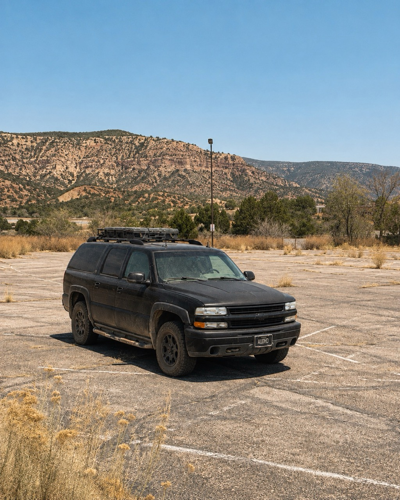
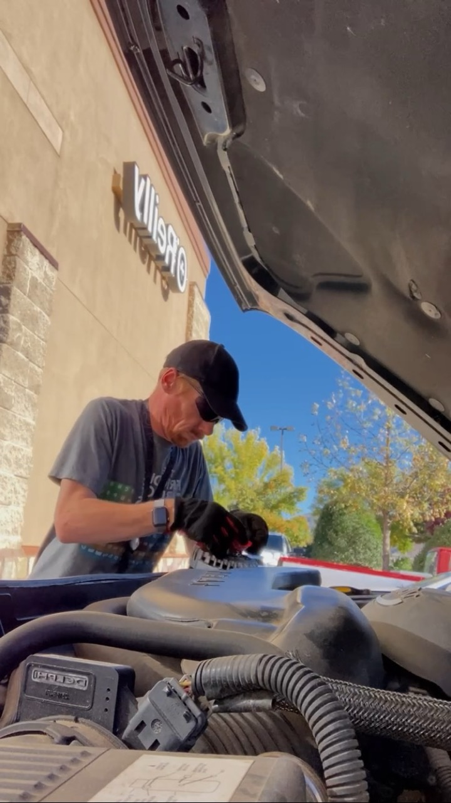
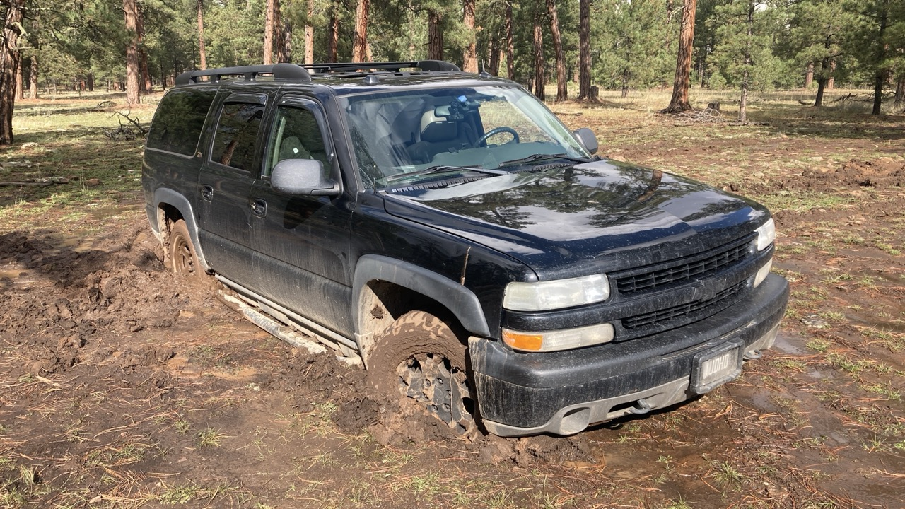
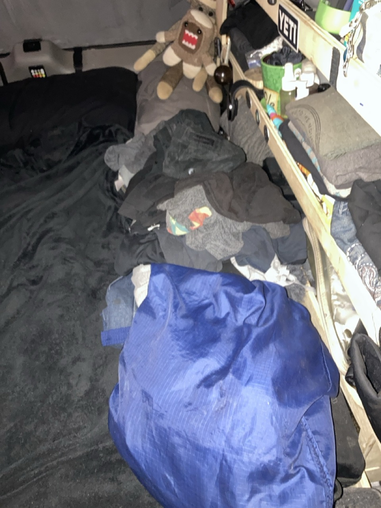

Every photograph tells the truth. It just does not tell the whole truth.
A photograph can make this life look simple.
Horizon parked beneath tall trees. A dirt road disappearing into the mountains. Coffee beside a quiet campsite. Evening light moving across the San Juans while everything looks still, comfortable, and exactly where it belongs.
Those moments are real. They are some of the reasons I keep choosing this life.
But the photograph ends at the edge of the frame.
The picture is real. So is everything it leaves out.
The version everyone sees
People see the mountain, the road, the campsite, and the truck. They see Horizon looking at home somewhere remote, surrounded by trees and open space.
What they usually do not see is what happened before I took the picture.
They do not see me moving things around inside the truck, trying to make enough room to sit down. They do not see the dirty dishes, the laundry, the repairs waiting underneath the hood, or the bills that decided I needed to stay in town instead of going camping.
They do not see how much work can surround one quiet moment.

Summer turns Horizon into an oven
Durango has been well into the nineties this week.
Inside a black Suburban, that means something completely different. I have recorded temperatures above 110°F inside Horizon.
At that point, summer is no longer something happening outside. It takes over the entire living space.
The curtains stay closed. Fans run constantly. Windows stay cracked whenever it is safe. I keep moving around town, looking for shade that disappears as the sun crosses the sky.
Sometimes the coolest place available is a library, a store, or a parking lot where I can sit long enough to work without feeling like my brain is melting.
The heat changes food too.
Fresh fruit spoils faster. Vegetables wilt. Bread molds. Anything left outside the refrigerator becomes questionable much sooner than it would inside a climate-controlled home.
I can buy less food at a time, but that means more trips into stores and often spending more money. I can rely more heavily on shelf-stable food, but that usually means giving up some of the fresh things I actually want to eat.
Even groceries become a calculation.
Camp is not always where I need to be
I should be out camping this week.
I should be somewhere higher, cooler, and quieter, with the windows open and enough shade to make the afternoon manageable.
Instead, I am in town trying to catch up on bills.
I have not been working much outside of creative work here in the truck. Creative work takes time, and the money does not always arrive when the effort does.
That means staying near DoorDash zones, stores, fuel, and the places where I can pick up enough work to keep everything moving.
Sometimes the responsible choice looks nothing like the photograph I wanted to take.
A beautiful campsite does not pay insurance. It does not buy fuel. It does not make a repair disappear.
So I stay in town, even when every part of me wants to drive back into the mountains.
The repairs waiting in the heat

Horizon always has something waiting.
Right now that list includes spark plugs, plug wires, a fuel filter, and an exhaust system that still needs attention.
None of those repairs are optional forever.
But doing them means working around a hot engine, hot metal, and a truck that has spent all day absorbing sunlight. Even getting started takes more energy than I have had available during this heatwave.
Executive dysfunction already makes starting large tasks difficult. Heat makes every part of that worse. Thinking, organizing tools, getting underneath the truck, keeping track of parts, and finishing before dark can become more than I can manage.
So the work waits.
Sometimes it waits because I am exhausted. Sometimes it waits because I need the money for groceries or fuel. Sometimes it waits because surviving the day takes priority over improving the truck.
That is not neglect. It is triage.
Mud does not look glamorous from inside it

Last year during monsoon season, I got Horizon stuck in the mud.
Not the kind of stuck where rocking back and forth eventually gets you moving. Horizon was buried deeply enough that continuing only made things worse.
I could not move forward. I could not back out. The truck was sitting at an angle that made sleeping uncomfortable no matter how I positioned myself.
So I stayed there overnight.
The photograph shows mud, tires, and a truck that clearly is not going anywhere. It does not show the hours spent waiting, the uncertainty about when someone might come along, or how uncomfortable it is to sleep when your entire home is leaning the wrong direction.
Eventually, a friendly person in a Jeep arrived. He stopped, hooked up a winch, and pulled Horizon free.
That story is not only about getting stuck.
It is also about the stranger who chose to stop and help.
Some of the best parts of road life begin with something going completely wrong.
Laundry becomes its own problem

Laundry is another thing that rarely appears in photographs.
It piles up.
Executive dysfunction can turn one delayed trip to the laundromat into a much larger problem. I know the clothes need to be washed. I see them every day. I mentally add laundry to the list over and over.
Starting is still difficult.
Then there is the money.
Ten dollars does not sound like much until ten dollars is what you need for fuel, food, a prescription, or the next bill.
Sometimes laundry waits because I cannot begin the task. Sometimes it waits because I simply do not have ten dollars to spare.
Neither version makes a particularly inspiring photograph.
There is always another side of the picture
Outside the frame might be dirty dishes, spoiled fruit, sweaty clothes, an overdue repair, or a nervous glance at the fuel gauge.
It might be a list of bills that determines where I can go next.
It might be anxiety, exhaustion, executive dysfunction, or the realization that I cannot do everything that needs to be done today.
None of that makes the photograph dishonest.
It makes the photograph incomplete.
That is why I write these stories
Photography captures the part of a moment that can be seen.
The Notebook gives me somewhere to record everything else.
Ten years from now, I may not remember the camera settings or the exact place I stood when I pressed the shutter.
I will remember the heat.
I will remember the mud.
I will remember the repairs I could not afford, the laundry I could not start, and the person in the Jeep who stopped to help.
I will remember wanting to be in the mountains while sitting in a parking lot trying to earn enough money to get back there.
And I will remember that even during the difficult weeks, there were still moments worth photographing.
The photograph holds the view. The story holds everything around it.